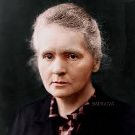
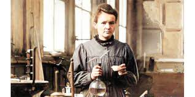
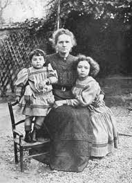
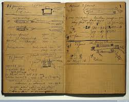
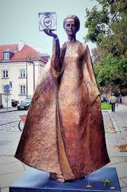

Marie Skłodowska Curie (born November 7, 1867, died July 4, 1934) was a pioneering physicist and chemist of Polish and naturalized-French descent. She was the first woman to win a Nobel Prize and remains the only person to be awarded the Nobel Prize in two different scientific fields: Physics and Chemistry. Her groundbreaking research laid the foundational principles for modern nuclear physics and paved the way for oncology treatments.
Born in Warsaw, then part of the Russian Empire, Curie faced immense educational barriers simply for being a woman. She initially studied in secret at Warsaw's clandestine "Flying University" before relocating to Paris in 1891. There, she earned her higher degrees at the Sorbonne and met her future husband, Pierre Curie. Together, they formed a formidable scientific partnership that would forever change the scientific landscape.
The Curies conducted pioneering work on invisible rays given off by uranium, which Marie famously coined as "radioactivity." Their relentless labor in a drafty, unventilated Parisian shed eventually led to the discovery of two new elements: polonium (named in honor of her native Poland) and radium. Marie Curie became the first woman to earn a doctorate in France and took over her husband's teaching post at the Sorbonne following his tragic death in 1906.
During World War I, Curie recognized the immediate need for battlefield medical advancements. She developed the concept of mobile radiography units—affectionately dubbed "Little Curies"—which provided vital X-ray services to over a million wounded soldiers. She personally drove these vehicles to the front lines, demonstrating her profound commitment to humanitarian efforts and the practical application of her scientific discoveries.
In her later years, Marie Curie founded the Radium Institute in Paris, which became a global hub for medical research. Unfortunately, her decades of unshielded exposure to radioactive materials took a severe toll on her health. She died in 1934 of aplastic anemia. Today, her legacy lives on not only in the annals of science but through the continued use of radiation therapy in modern medicine, for which she laid the very first stone.
| Year | Achievement / Honor |
|---|---|
| 1893 | Earned Licentiate in Physics at the Sorbonne |
| 1894 | Earned Licentiate in Mathematical Sciences |
| 1903 | Awarded the Nobel Prize in Physics |
| 1903 | Awarded the Davy Medal by the Royal Society |
| 1906 | Became the first female professor at the University of Paris |
| 1911 | Awarded the Nobel Prize in Chemistry |
| 1914 | Appointed Director of the Curie Laboratory in the Radium Institute |
| 1915 | Invented mobile X-ray units for World War I |
| 1922 | Became a member of the Committee on Intellectual Cooperation by the League of Nations |
| 1995 | Became the first woman to be laid to rest in the Paris Panthéon on her own merits |